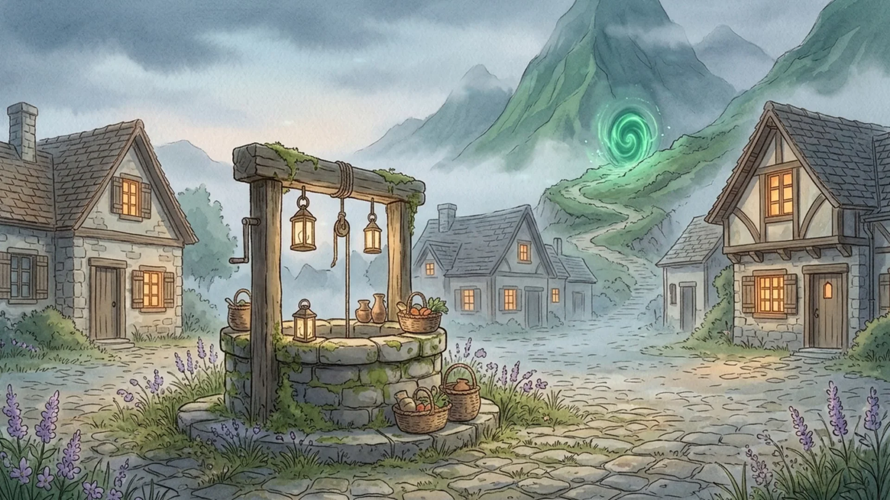
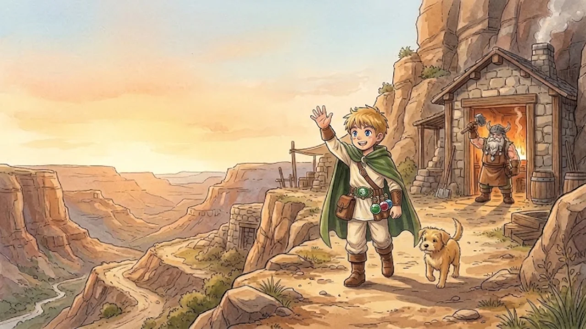
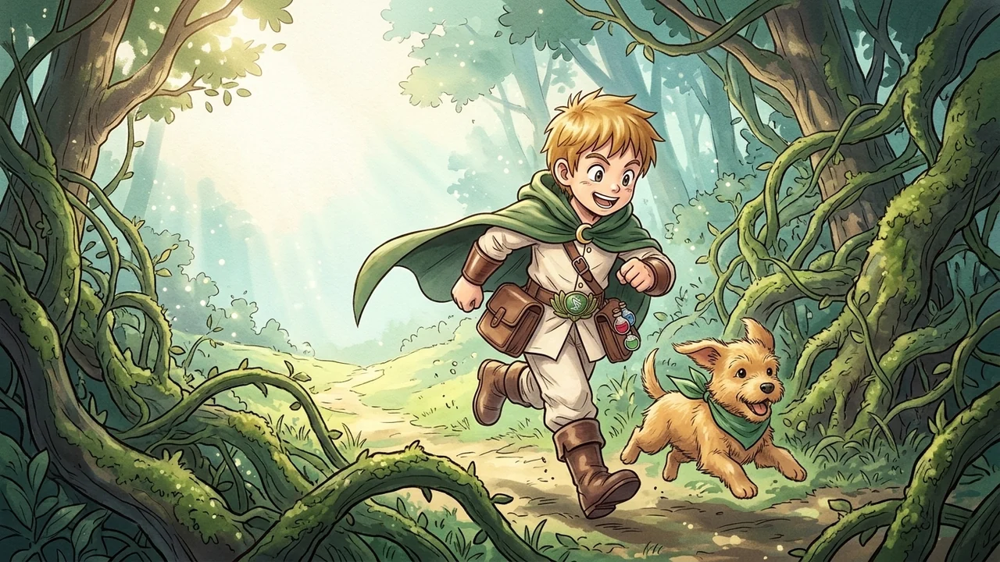
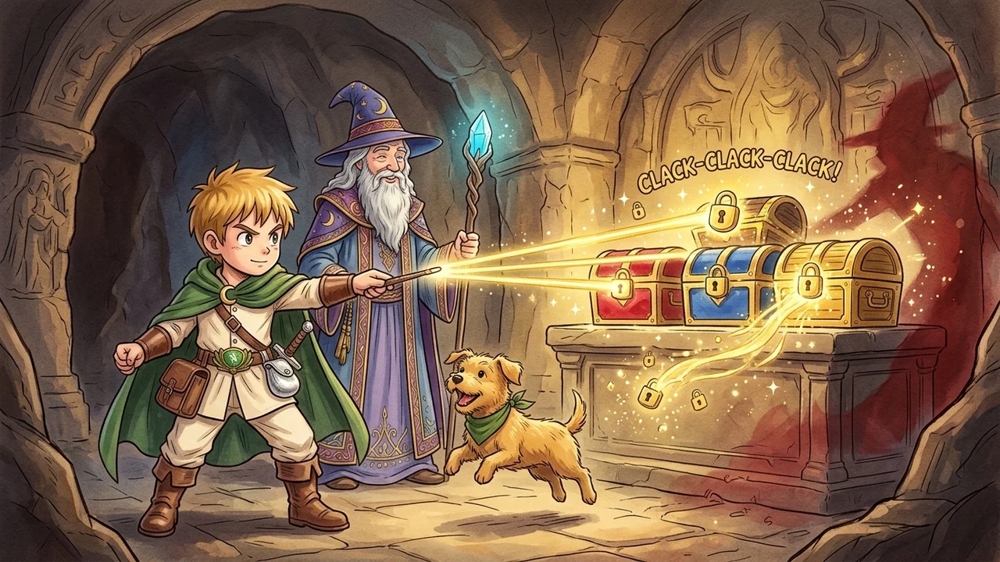
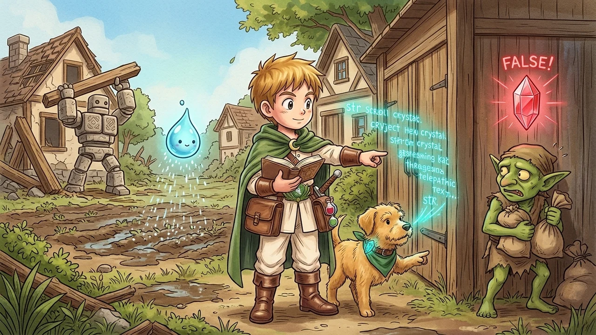
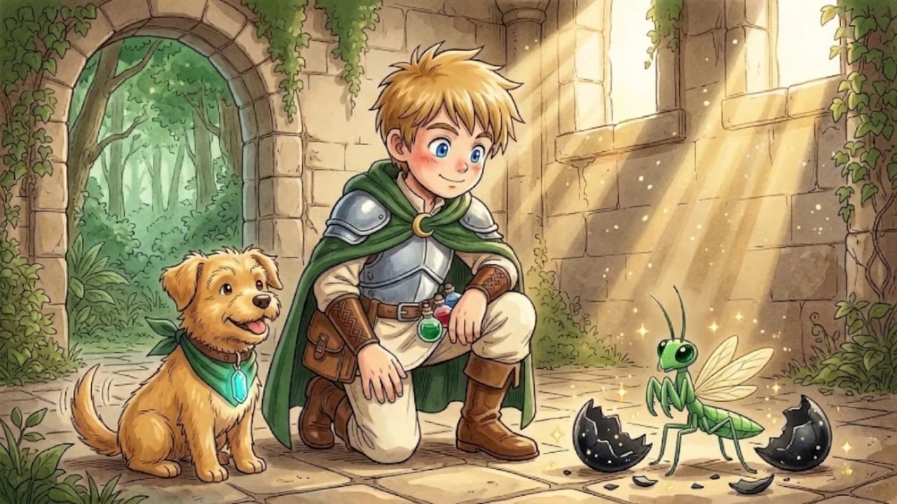

Part 3 · Loom Forest
Part 3 · Loom Forest
Grandma Looma's Cottage
WEAVE · print("Hello", "Pythonia!")
Grandma Looma shows Kai how commas give words neat space, while a friendly golden pup sniffs his boots.

Prologue · Complete Bilingual Storybook
When Kai pauses mid-game to help a stuck classmate, an emerald portal carries him into Pythonia. Scroll to hear soothing music and read all 13 parts of his adventure!
Chapter 01 · Silent Village
Kai kneels to comfort a frightened child instead of drawing his sword, and his golden Spellbook glows with the very first spell: print("Hello!").
print("Hello!")
Act II · Realms Across Pythonia
Click any realm card below to jump straight into that chapter inside the Part-by-Part Storybook Reader.
Part 3 · Loom Forest
WEAVE · print("Hello", "Pythonia!")
Grandma Looma shows Kai how commas give words neat space, while a friendly golden pup sniffs his boots.

Part 4 · Iron OutpostFUSE · print("Iron" + "Sword")
The horned Blacksmith teaches Kai to weld two broken halves into one solid IronSword with zero gaps.

Part 5 · Whispering ForestLISTEN · input("What is your name? ")
Kai pauses quietly to listen for a reply, naming his loyal golden-tan puppy String.

Parts 6–7 · Three ChestsMULTI-VAULT · hp, mana, gold = 100, 50, 10
Kai locks HP, Mana, and Gold in a single breath before the Great Wizard's emerald farewell.

Part 9 · SunnybrookSHAPESHIFT · type() & str String
Four crystal spirits rebuild storm-hit homes, and String gains a telepathic text ribbon.

Parts 11–13 · CitadelSIGHT & FATE · == & if / elif / else
With Dwarven armor and all 11 spells, Kai frees the Baby Praying Mantis Spell Guardian.
Complete Illustrated Storybook · 52 Scenes
Flip through all 4 illustrated scenes in each chapter (52 pages total), open dedicated multi-page chapters, or read in English & Traditional Chinese!
The Three Pillars of Kindness
From Silent Village to Master Grimsby's Dwarven Forge, every Python spell in Kai's journey teaches both clear thinking and kindness: Love Others, Love Yourself, and Love the Earth.
Meet all eight characters of Pythonia below and explore the 12 canonical realms and 11 Ancient Spells.
Interactive Codex
Storybook Characters (8 Cast)
Twelve Story Realms (ENV_R00 to ENV_R11)
Prologue, Eleven Ancient Spells & Epilogue

Act IV · Citadel of Core Finale
With String dashing beside him and glowing == Sight eyes, Kai spots the flaw in the Bug King's armor and frees the tiny emerald Baby Praying Mantis Spell Guardian.
Epilogue Awakening
Pick a Kindness Pillar for your Spellkeeper Seal, then keep scrolling to watch the morning meadow bloom.
Attuned Pillar: Love Others · Voice, Weave, Fuse & Fate ready for your finale seal.

Act V · Dawn Sanctuary Finale
Type your name and what you learned from Kai, draw a Jing Si Aphorism to take home, and download your 960x540 certificate featuring Hero Kai!